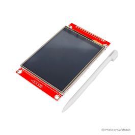

سختافزارهای مورد استفاده

ماژول نمایشگر 2.8 اینچ TFT لمسی SPI v1.2
SKU: LCD-01-280نمایشگر تمام رنگی دارای ارتباط سریال SPI با کنترلر درایور ILI9341، تاچ پنل مقاومتی به همراه چیپ XPT2046 و سوکت کارت حافظه SD.
- رزولوشن تصویر 320 x 240 (QVGA)
- تراشه درایور LCD ILI9341 (SPI 4-Wire)
- کنترلر صفحه لمسی XPT2046 (SPI Dedicated)
- عمق رنگ 65K / 262K Colors (RGB565)
- ولتاژ کاری 3.3V Logic Level

برد توسعه NodeMCU ESP8266 (CH340)
SKU: COM-03-009برد مجهز به ماژول ESP-12E با پردازنده ۳۲ بیتی تنسیلیکا، حافظه فلش ۴ مگابایت، ارتباط وایفای داخلی و رابط سریال CH340.
- پردازنده مرکزی Xtensa LX106 @ 80/160 MHz
- حافظه فلش 4 MB SPI Flash
- گذرگاه سختافزاری SPI HSPI (D5=CLK, D6=MISO, D7=MOSI)
- مبدل سریال به USB CH340G
- سطح منطقی پایهها 3.3V (غیر متحمل به 5V)
دیاگرام و جدول تطبیق اتصالات (Wiring Pinout)
SCK / T_CLK) و دیتای ارسالی (SDI / T_DIN) بین نمایشگر و کنترلر تاچ موازی میشوند. تفکیک تراشهها توسط پایههای مجزای Chip Select یعنی D8 برای تصویر و D2 برای لمس صورت میگیرد.
| ردیف | پین ماژول نمایشگر ۲.۸ اینچ | پین برد NodeMCU | شماره GPIO | دستهبندی سیگنال | شرح عملکرد اتصال |
|---|---|---|---|---|---|
| ۱ | VCC | 3V3 | - | POWER (+3.3V) | تغذیه مدار منطقی نمایشگر و تاچ |
| ۲ | GND | GND | - | GROUND (0V) | اتصال مشترک زمین مدار |
| ۳ | CS | D8 | GPIO15 |
TFT CHIP SELECT | فعالساز تراشه تصویر (Active Low - سازگار با بوت پولداون ESP8266) |
| ۴ | RESET | D0 (یا RST) | GPIO16 |
RESET | ریست سختافزاری نمایشگر در شروع کار |
| ۵ | DC / RS | D1 | GPIO5 |
DATA / COMMAND | تفکیک بایتهای رجیستری دستور از دادههای پیکسلی |
| ۶ | SDI (MOSI) | D7 | GPIO13 |
HSPI MOSI | خط ارسال دادههای تصویر از نودامسییو به نمایشگر |
| ۷ | SCK (CLK) | D5 | GPIO14 |
HSPI CLK | کلاک همگامساز سختافزاری SPI |
| ۸ | LED (BLK) | 3V3 | - | BACKLIGHT | تغذیه بکلایت (نور پسزمینه دائم روشن با حداکثر شفافیت) |
| ۹ | SDO (MISO) | آزاد (اختیاری) | GPIO12 |
HSPI MISO | خواندن داده از LCD (برای نوشتن تصویر نیازی به اتصال نیست) |
| ۱۰ | T_CLK | D5 | GPIO14 |
TOUCH CLOCK | کلاک کنترلر تاچ (مشترک با پایه SCK نمایشگر) |
| ۱۱ | T_CS | D2 | GPIO4 |
TOUCH CS | فعالساز مجزای کنترلر تاچ XPT2046 (Active Low) |
| ۱۲ | T_DIN | D7 | GPIO13 |
TOUCH MOSI | ورودی دیتای تاچ (مشترک با پایه SDI نمایشگر) |
| ۱۳ | T_DO | D6 | GPIO12 |
TOUCH MISO | خروجی دیتای مختصات لمس به نودامسییو |
| ۱۴ | T_IRQ | D3 (یا آزاد) | GPIO0 |
TOUCH IRQ | پایه وقفه تشخیص لمس (کد به صورت خودکار با روش Polling نیز کار میکند) |
- پایه D8 (GPIO15) باید هنگام روشن شدن حتماً LOW باشد. برد نودامسییو دارای پولداون داخلی روی این پین است؛ لذا اتصال آن به CS مشکلی در بوت ایجاد نخواهد کرد.
- پایه D3 (GPIO0) هنگام روشن شدن نباید به زمین متصل باشد، در غیر این صورت برد به حالت Flash Mode میرود. پین T_IRQ در حالت آزاد خروجی High دارد و خطری ایجاد نمیکند.
مراحل گامبهگام اجرای پروژه (Step-by-Step Lab Protocol)
سیمبندی روی بردبورد یا با سیمهای جامپر مادگی به نری
طبق جدول اتصالات بالا، ابتدا پینهای تغذیه (VCC و GND) و سپس پینهای مشترک SPI یعنی کلاک (D5) و دیتا (D7) را متصل نمایید. در انتها خطوط کنترلی CS نمایشگر (D8) و تاچ (D2) را متصل کنید. دقت نمایید که تغذیه ماژول از خروجی 3V3 نودامسییو تأمین گردد.
نصب کتابخانههای آردوینو (Library Installation)
نرمافزار Arduino IDE را باز کرده، از منوی Sketch > Include Library > Manage Libraries... سه کتابخانه رسمی زیر را جستجو و نصب فرمایید:
تنظیمات برد و درگاه در منوی Tools
از منوی Tools > Board > ESP8266 Boards گزینه NodeMCU 1.0 (ESP-12E Module) را انتخاب نمایید.
فرکانس پردازنده را روی 160 MHz (جهت بیشینه کردن سرعت رندر فریمها) و Upload Speed را روی 921600 یا 115200 تنظیم فرمایید.
کامپایل و آپلود برنامه تست
اسکتچ آماده شده (کد زیر) را باز کرده و دکمه Upload را بزنید. پس از اتمام آپلود، نمایشگر روشن شده و ابتدا بنچمارک اشکال هندسی و سپس رابط کاربری بوم نقاشی لمسی لود میشود.
تست تعاملی و مشاهده خروجی در سریال مانیتور
پنجره Serial Monitor را با نرخ باودریت 115200 باز کنید. با قلم یا انگشت روی صفحه ضربه بزنید یا خط بکشید. مختصات خام مبدل ADC و مختصات کالیبرهشده پیکسلی را به صورت بلادرنگ مشاهده خواهید کرد.
شبیهساز و مفهوم کالیبراسیون مختصات تاچ (Coordinate Simulator)
ماوس یا لمس خود را روی کادر زیر حرکت دهید تا نحوه تبدیل مقادیر خام مبدل ۱۲ بیتی (ADC Raw) به پیکسلهای نمایشگر ۳۲۰ در ۲۴۰ را مشاهده کنید:
قرائت زنده پارامترها
map(rawX, 240, 3820, 0, 320)
کد کامل اسکتچ تست (Arduino Test Sketch)
/**********************************************************************************
* پروژه تست و راهاندازی ماژول نمایشگر 2.8 اینچ TFT لمسی SPI به همراه NodeMCU ESP8266
*
* سختافزارهای مورد استفاده:
* 1. ماژول نمایشگر 2.8 اینچ TFT لمسی تمام رنگ SPI ورژن 1.2 (کد کالا: LCD-01-280)
* - درایور تصویر: ILI9341 (رزولوشن 320x240 پیکسل، 65K رنگ RGB565)
* - کنترلر لمسی: XPT2046 (ارتباط SPI مجزا)
* 2. برد توسعه NodeMcu دارای هسته وایفای ESP8266 و مبدل CH340 (کد کالا: COM-03-009)
*
* اتصالات پینها (Wiring Pinout):
* VCC -> 3V3 | GND -> GND | CS -> D8 (GPIO15) | RESET -> D0 (GPIO16)
* DC -> D1 (GPIO5) | SDI(MOSI) -> D7 (GPIO13) | SCK -> D5 (GPIO14)
* LED -> 3V3 | T_CLK -> D5 | T_CS -> D2 (GPIO4)| T_DIN -> D7 | T_DO -> D6 (GPIO12)
**********************************************************************************/
#include <SPI.h>
#include <Adafruit_GFX.h>
#include <Adafruit_ILI9341.h>
#include <XPT2046_Touchscreen.h>
#define TFT_CS D8 // GPIO15
#define TFT_DC D1 // GPIO5
#define TFT_RST D0 // GPIO16
#define TOUCH_CS D2 // GPIO4
Adafruit_ILI9341 tft = Adafruit_ILI9341(TFT_CS, TFT_DC, TFT_RST);
XPT2046_Touchscreen ts(TOUCH_CS);
#define TS_MINX 240
#define TS_MAXX 3820
#define TS_MINY 260
#define TS_MAXY 3800
const uint16_t PALETTE_COLORS[] = {
ILI9341_WHITE, ILI9341_RED, ILI9341_GREEN, ILI9341_BLUE,
ILI9341_YELLOW, ILI9341_CYAN, ILI9341_MAGENTA, ILI9341_ORANGE
};
uint16_t currentColor = ILI9341_YELLOW;
int brushSize = 3;
const int CANVAS_X = 65;
const int CANVAS_Y = 38;
const int CANVAS_W = 250;
const int CANVAS_H = 196;
int lastTouchX = -1;
int lastTouchY = -1;
bool isTouching = false;
bool getTouchCoordinates(int &screenX, int &screenY, int &rawX, int &rawY, int &rawZ) {
if (!ts.touched()) return false;
TS_Point p = ts.getPoint();
rawX = p.x; rawY = p.y; rawZ = p.z;
if (rawZ < 300) return false;
screenX = map(rawX, TS_MINX, TS_MAXX, 0, tft.width());
screenY = map(rawY, TS_MINY, TS_MAXY, 0, tft.height());
screenX = constrain(screenX, 0, tft.width() - 1);
screenY = constrain(screenY, 0, tft.height() - 1);
return true;
}
void setup() {
Serial.begin(115200);
tft.begin();
tft.setRotation(1);
tft.fillScreen(ILI9341_BLACK);
ts.begin();
ts.setRotation(1);
initUserInterface();
}
void loop() {
int sx, sy, rx, ry, rz;
if (getTouchCoordinates(sx, sy, rx, ry, rz)) {
Serial.printf("[TOUCH] Raw: X=%d Y=%d Z=%d -> Screen: X=%d Y=%d\n", rx, ry, rz, sx, sy);
if (sx >= CANVAS_X && sx <= (CANVAS_X + CANVAS_W) &&
sy >= CANVAS_Y && sy <= (CANVAS_Y + CANVAS_H)) {
if (isTouching && lastTouchX != -1) {
tft.drawLine(lastTouchX, lastTouchY, sx, sy, currentColor);
}
tft.fillCircle(sx, sy, brushSize, currentColor);
lastTouchX = sx;
lastTouchY = sy;
}
isTouching = true;
} else {
isTouching = false;
lastTouchX = -1;
}
delay(10);
}راهنمای جامع عیبیابی و پرسشهای متداول (Troubleshooting)
۱. سیمهای خطوط SCK (D5)، MOSI (D7)، DC (D1) و CS (D8) را از نظر قطعی یا جا به جا بودن بررسی کنید.
۲. پین RESET (D0) را بررسی کنید. میتوانید برای تست، این پین را مستقیماً به پایه RST برد نودامسییو وصل کنید.
۳. اطمینان حاصل کنید کتابخانه
Adafruit_ILI9341 به درستی نصب شده باشد.
۲. اطمینان حاصل کنید پینهای T_CLK و T_DIN به ترتیب با پینهای D5 و D7 مشترک شده باشند.
۳. در کد برنامه، مقدار شرط فشار تاچ (
rawZ < 300) را بررسی کنید؛ لمس مقاومتی نیاز به فشار ملایم ناخن یا قلم مخصوص (Stylus) دارد.
- اگر حرکت چپ و راست برعکس است،
INVERT_TOUCH_X را برابر true قرار دهید.- اگر حرکت بالا و پایین برعکس است،
INVERT_TOUCH_Y را برابر true قرار دهید.- اگر محور افقی و عمودی جابهجا شدهاند،
SWAP_TOUCH_XY را فعال فرمایید.
۱. در انتهای تابع
loop() حتماً از delay(10); یا yield(); استفاده فرمایید تا تسکهای پشت صحنه سیستم عامل وایفای فرصت اجرا پیدا کنند.۲. تغذیه برد را از درگاه USB پایدار تأمین کنید. جریان مصرفی کل حدود ۱۲۰ میلیآمپر است و افت ولتاژ پورت میتواند موجب Brownout Reset شود.